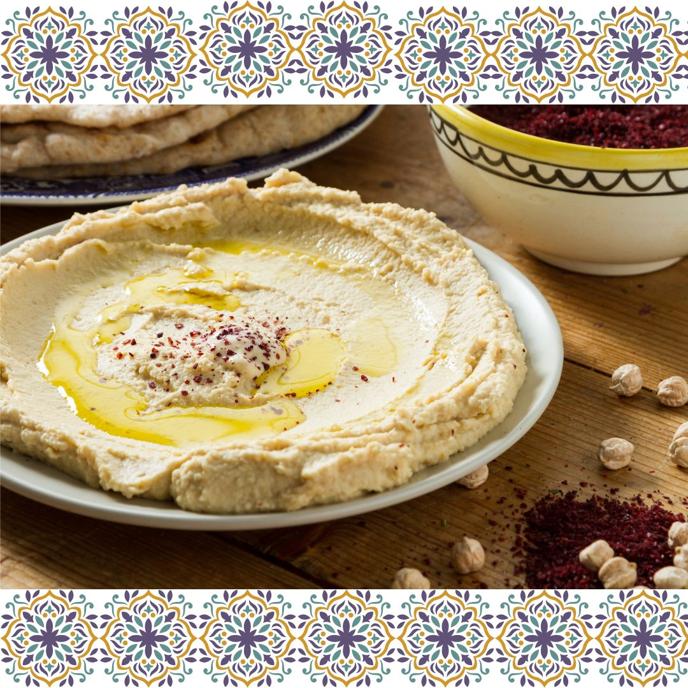

Recipes For You
Hummus is a versatile, nutritious, and healthy food that has been enjoyed throughout the Middle East and Mediterranean regions for centuries. Known primarily as a dip or spread, hummus is full of health benefits and can be enjoyed in a variety of meals.
Hummus is an excellent source of fibre, protein, and essential vitamins. Eating a regular hummus-based meal can help promote weight loss and help regulate your digestive system. Hummus contains both monounsaturated and polyunsaturated fats which can help to reduce bad cholesterol levels in the body and promote overall heart health. It is also a great source of iron which can help to boost energy and the production of red blood cells. Finally, hummus is also full of important nutrients such as phosphorus, magnesium, zinc, and Vitamin B6. All these essential vitamins and minerals can help boost your immune system and prevent disease.

Ingredients:
1 15 oz. can of chickpeas, drained and rinsed
-2 cloves of garlic, minced
-2 tablespoons of tahini
-1 lemon, juiced
-2 tablespoons of olive oil
-1/2 teaspoon of cumin
-1/2 teaspoon of paprika
-Salt and pepper to taste
Instructions:
1. Place chickpeas, garlic, tahini, lemon juice, olive oil, cumin, and paprika in a food processor or blender.
2. Process until smooth, about 2 minutes.
3. Taste and season with salt and pepper if desired.
4. To serve, spread in a bowl, drizzle with additional olive oil and paprika. Enjoy!